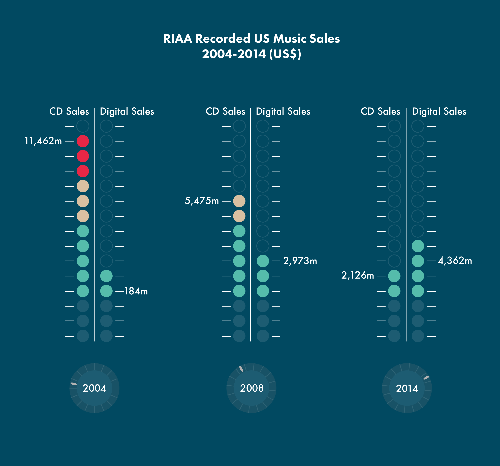
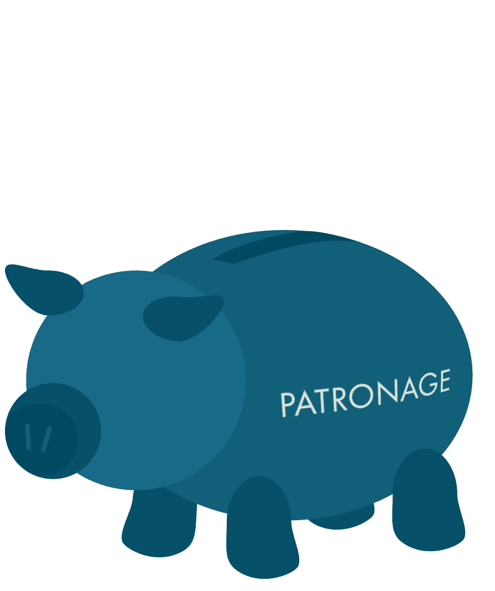

An exploration of the new ethics present in the contemporary music industry, this article attempts to provide information on the new media in an effort to inform consumers to make educated decisions.
Since the onset of the digital era we have seen a enormous change in the way music is discovered, listened to, distributed and monetised. It has business immensely with multiple different models of monetisation being experimented with, and the industry trying to catch up to a constantly moving consumer base. It has also had a great affect on the definition of musician. Recently in a speech discussing his career, Robert Forster of 80s Australian band The Go-Betweens commented on his shock at the change of attitude with young musicians, who no longer have any expectations of monetary gain from their art, as well as his own shock at the loss of his "superannuation" of songwriting royalties being pulled out from under him.
What ever you opinion on the relationship between money and music, it is clear that the changes taking place will and are affecting the way we not only access music, but the way it is created. Theses issues are diverse and fast evolving, and do not have hard and fast solutions. It is however possible to contribute to the path the future takes. The regular music consumer has many different options, and has the power to influence the future through their own choices. Whether considering industry ethics, personal satisfaction, or simply wanted to help the artists they enjoy, the choices consumers make can have an impact on the overall industry.
"The regular music consumer has many different options, and has the power to influence the future through their own choices"
This is however, an area of certain confusion. Lengthy user agreements, pop star outcries, media manipulation and just a simple misunderstanding of the issue all contribute to a field that is difficult to navigate. Here we will explore the current major platforms of the new music industry, their ethics, and potential future. We will also look at their current alternatives and the viability of these options. In doing this we can attempt to clear the fog, and give a straightforward map for music consumers to make their own ethical decisions.
The traditional music industry model was the dominant form for decades, but has slowly fallen away since the late 90s with advent of file sharing, and illegal downloading.
The slow pace it which the industry reacted to these changes certainly contributed to its demise, and although profits from digital sales have steadily increased over the ensuing years, they are taking a share of an ever decreasing profit.
Itunes has long been the leader of this sales model and has been key to the move of music sales online. It has however had been brought to question for its poor treatment of the artists who's music they are selling. Of the 99c paid for downloading a song on itunes, the artist can expect between 9-70 cents, depending on the relationship and generosity of their label. Although certainly not the worst of the big industry, itunes do have the monopoly over music downloads, and thus most artists must go with them in order to make their music available. They are however being quickly caught by the next category.
Streaming services have becoming increasingly popular in the last 3-5 years, and a wider variety of platforms are becoming available. Spotify, being launched back on 2012, is certainly the most popular of these, though quickly being chased by Apples new Beats, and is fast approaching taking over as the new leader in music sales. This appears to be industry finally catching up to consumer digital needs, and with portability and convenience of music being the key want, it seems like the perfect solution.
On closer inspection however it can be seen that this is mostly not an industry lead format, rather the product of entrepreneurial venture. Their business model of company Spotify is demonstrative of this, and displays their entrepreneurial nature. Although ever growing, the company is less concerned with profit and more with maintaining this growth. Thus the company has actually turned losses in previous.
This needless to say does not bode well for their likelihood of supporting artists. Criticism of Spotify's payment practice, and we have even seen big name artists like Taylor Swift and Neil Young pull their catalogues in protest over poor deals. An fun piece to check compares the earnings of NYC subway buskers to revenue from streaming . It is true that the return on a stream on Spotify to an artist is tiny. Equating to about $0.0011 per play, potentially less once a label gets involved, and less again if the user streaming does not have a paid subscription. This adds up to approximately 9,000 plays to earn enough to pay the $9.99 monthly subscription.
"This adds up to approximately 9,000 Spotify plays to earn enough to pay the $9.99 monthly subscription."
There is another point of view on the matter however. Spotify claims that it is actually saving the music industry, and reports of decreased music piracy with increased streaming memberships countries like Norway seem to support this claim. The company also makes the argument that changes call for a new way of looking at music revenue, and that previous models of assessment are not valid. The suggestion is that the $0.70 an artist makes from their sale of a song on itunes is a one off transaction, while earnings from Spotify have the potential to continue providing an artist with revenue for years to come. This is a proposition supported by some artists, who report that revenue from Spotify makes sense and is the logical direction for the future of music sales. Along with this argument however , is the increasing feeling among artists that album sales are no longer the be all and end all in making a successful living.
While the previous models are the major revenue pullers in the current music industry landscape, they are industry focused. They are of the benefit of bigger artists and in keeping commercial industry itself healthy. There do exist many more artist facing platforms, allowing them to share and monetise their music online. Soundcloud is one such sharing service, while Bandcamp is an increasingly popular site for sales of music and merchandise for musicians. Bandcamp has been lauded for its artist-friendly business model, and is popular with independent musicians, allowing direct band-to-fan interaction. The site hosts content for a small fee, which decreases with increased sales, and passes majority profits onto artists. It allows listeners to stream music a number of times before being asked to buy the album. These types of service are driven by artists and put the onus on them to promote and monetise their music.
"Bandcamp is an increasingly popular site for sales of music and merchandise for musicians"
With this frame of thinking in mind, it has been proposed that the current system of monetising music is broken and needs to be overhauled for the 21st century. The concept of patronage is increasingly popular and aims to be a solution to current music industry issues. The aims of patronage are to look back to the era before recorded music and the model of supporting musicians through benefactors. The updated concept is crowd patronage, operating under a similar idea to crowd funding. Artists have the opportunity to connect with fans over the internet, share exclusive material, merchandise and interactions, to patronage who would pay a small fee. Sites such as Artistshare attempt to provide a platform for this service to occur.
However, under this model all music would be essentially free. Music created would be available to be accessed by anyone and the creators would rely on finding a fan base to support them. While this may seem difficult, it is actually not too far from the current reality, with illegal downloading still being extremely prevalent in most countries. The problem lies in popularising the platform in order to make it viable, which would require less input from consumers, and more from larger artists with existing fanbases leading the way. Bandcamp has recently began to support this concept in their sales model, and it is likely to become more popular in the future.
Clearly there is a wide range of options for the current consumer and all are potentially viable directions that music could move. There are however further ideas for monetisation that prove to be creative and interesting, if somewhat unrealistic. One in particular that has been suggested several times throughout industry problems has been the idea of taxing to support music. The thought of taxing all individuals to pay industry and musicians appears unlikely and is not a viable solution. A more interesting idea is that of taxing individual devices used for listening to music. A levy would be added to ipods and other such devices that would pay for the music they will be used to listen. This is an interesting idea and a potentially interesting solution. It however requires a certain amount of government involvement and difficulty to achieve, and is also unrealistic in the short term.
Overall, the industry, although not experiencing the income that has characterised it historically, is still managing to sustain itself with the current methods of sale. While trends and movements will continuing to occur, it is down to the individual consumer to push their own directions and outcomes, to create a business that serves their artists on their ethics.